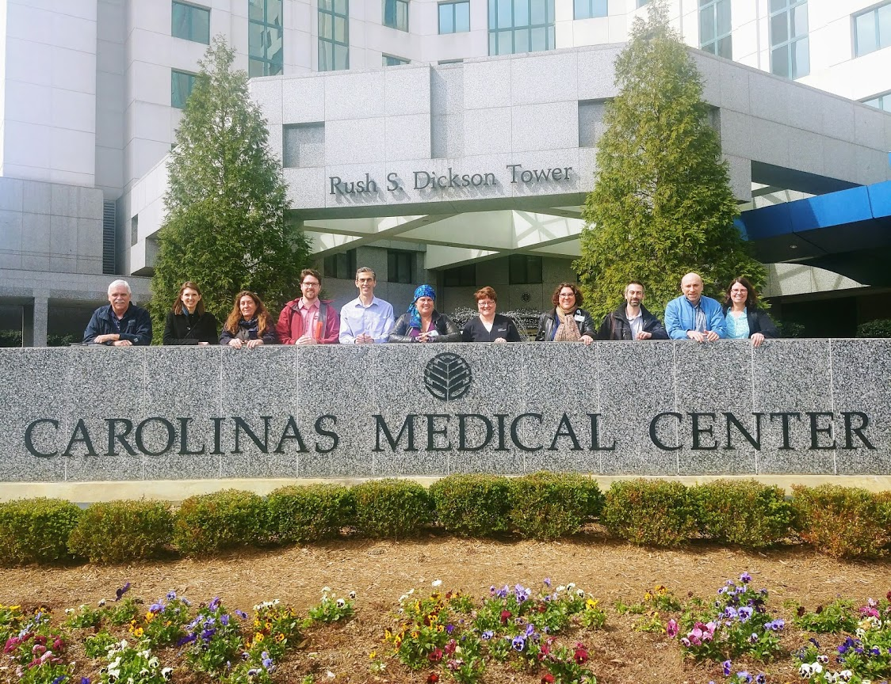
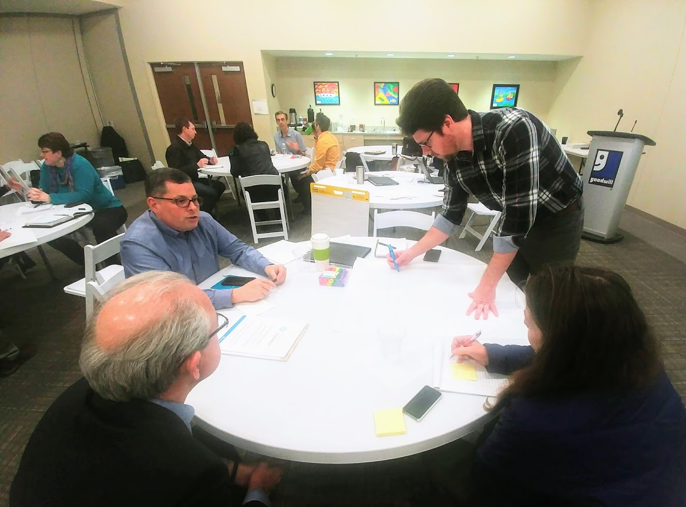
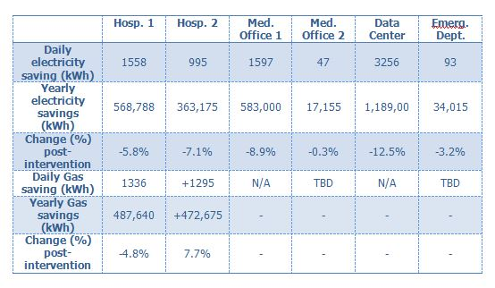

Tools Used
Initiated By
- Atrium Health
Partners
- University of North Carolina, Charlotte
- U.S. Department of Energy
Results
- Energy savings of 3% to 12% (2.5 kWh / square foot and 57,398 kWh per trainee per year)
Case Study PDF
Reports
2018 ACEEE Building Summer Study It’s Not My Job
2015 Human Behaviour and Facility Energy Management
2016 ACEEE Buildings Summer Study Designing Energy Behavior
2017 IEA technical report & IEA webinar
2017 BECC Conference Helping the Behaviour Changers
2017 IES DSM Storytelling paper
2018 BECC Conference Training Building Operators to be Energy Champions
2018 WEEC Presentation and Paper
2018 Tools of Change international landmark case study
2018 AEE energy innovator of the year award
Landmark Case Study
Energy Connect
Energy Connect shows that energy savings and occupant comfort can be achieved quickly and persistently in large, complex facilities when building operators and mechanics are empowered to solve building performance issues. Five interventions were tested across six diverse healthcare facilities at the second largest health network in North America. Verified first year results show annual energy savings at three facilities from 3% to 12.5% attributable to Energy Connect, and all pilot facilities saved energy. Designated a Landmark Case Study in 2018.
Background
Note: To minimize Tools of Change site maintenance costs, all case studies on this site are written in the past tense, even if they are ongoing as is the case with this particular program.
Building operators and mechanics account for a small percentage of people in each healthcare building, but have a disproportionately high impact on energy use. Therefore, their energy saving behaviors can dramatically reduce overall energy consumption. But can inherently risk-adverse and fiscally prudent entities such as hospitals; with the primary mandate of patient care adopt a culture of conservation without adding any new resources? Can we empower operators to see energy savings as part of their jobs? Based on the outcomes of this iterative, collaborative and multi-disciplinary test and evaluation, conducted from 2015 to 2018, the answer is YES.

Atrium Health (previously, Carolinas HealthCare System) is the second largest health network in North America. Here is the team of experts advising Kady Cowan (4th from the right)
Setting Objectives
The main behavioral goal of the program was for frontline facilities management staff to review and maintain set-point adjustments in their Building Automation Systems, with an eye to saving energy. Beyond that, the program purposely avoided stipulating specific behaviors that needed to be adopted, in order to encourage participating operators and mechanics to detect and act accordingly on energy waste on an ongoing basis. Examples of actions taken are described in the section below, “Delivering the Program”.

The main behavioral goal of the program was for frontline facilities management staff to review and maintain set-point adjustments in their Building Automation Systems
Getting Informed
In creating this program, Energy Connect’s founder, Kady Cowan, drew on eight years of work on energy behavior with healthcare facilities staff and building occupants in Toronto, Canada at the University Health Network (UHN). In 2013, working at UHN, she convened a diverse panel of outside experts to assist with the design of Operation TLC, the antecedent of Energy Connect.
In May 2016, Atrium Health collaborated with the University of North Carolina Charlotte to implement a pilot training program developed by the US Department of Energy with 15 frontline facilities staff from seven buildings. This program, named Building Retuning Training, was a standardized program for all commercial buildings. It covered the basics of the energy-related controls, sequences and mechanical equipment.
It became clear that the facilities staff were very interested in learning. They generally had had few opportunities to access subject-specific training related to their work, and most trainees were exposed to energy management for the first time during the Building Retuning Training sessions. However, it also became clear that the training program needed to be modified to better meet the energy literacy needs of the Atrium Health frontline facilities staff. At this point, plans for the formal Energy Connect program began to develop.
In October 2016, the design team, in conjunction with individual site-based facility leaders, participated in the first of a series of three workshops that were part of the International Energy Agency’s Demand-Side Management Technology Collaboration Program (Task 24 Helping the Behaviour Changers). Participants mapped out their current energy use, the socio-ecosystem and all its players, and engaged in a collaborative process to consider possible energy efficiency behaviors and intervention strategies.

Workshop participants mapped out the socio-ecosystem, target behaviors and intervention strategies.
The program was further developed through a second workshop and two Energy Connect Summits, featuring experts in sustainability, energy management, engineering, anthropology, hospital and facilities administration, and behavioral psychology. The experts came from four countries. This team of internal and external actors not only informed the design of Energy Connect, but also oversaw implementation and evaluation.
The Summits incorporated ‘Design Thinking’, a problem-solving technique using experimentation and evidence, beginning with a deep understanding of the needs and motivations of actors within the (energy) ecosystem. That approach helped participants imagine possible alternate futures and supported deeply user-centered outcomes. Participants engaged in a collaborative process to consider possible energy efficiency behaviors and intervention strategies. The most obvious target behavior to emerge was review and maintenance of set-point adjustments in the Building Automation Systems. This became the main behavioral focus of the program.
Qualitative Research
Qualitative data were gathered and analyzed for themes from 10 focus groups, 20 interviews, 113 surveys and 3 International Energy Agency Task 24 workshops. Qualitative research was used to accomplish two primary goals: (1) identify access points in the current system to leverage change and (2) document a baseline condition which program designers and evaluators could use as a comparison in the future.
A comprehensive report on benefits and barriers was produced to help program designers and target audience adapt interventions to their specific context and bring energy savings to life. The following are some of the barriers that building operators and mechanics were facing to save energy. Additional detail is provided in Table One.
Key Barriers Low Profile of Energy Management · Had not been required to save energy in the past · Perception that few others cared about saving energy · Past contradictions between what was said and what happened; an attitude that nothing would ever change · Lack of time to train and work on related issues · Systemic issues that could not be solved by individual actions alone · Reactive culture · High risk of trying new energy-saving ideas Lack of relevant experience and training · Not familiar with set-point scheduling and its importance for energy saving · Overly complex building operation manuals Varying requirements · Varying thermal preferences, technology, building conditions and response options.
The following are some of the co-benefits of this intervention.
- Rooms that were more comfortable and easy to control
- Feelings of pride in problem solving
- Reduced number of occupant complaints
- More time for routine maintenance.
Prioritizing Audiences
The program focused on frontline facilities management staff in hospitals and healthcare buildings, building operators, mechanics, and engineers. The secondary audience was building management supervisors, facility directors and corporate energy management staff.

The program focused on frontline facilities management staff
Delivering the Program
Energy Connect embraced complexity through human centered innovation rooted in training, capacity building and culture shifting. Five interventions were tested in healthcare living labs across six diverse healthcare facilities in Charlotte, North Carolina. These interventions and their evolution are described in Table Three.
The tests were conducted in separate facilities including two hospitals, two medical office buildings, one stand-alone emergency department and one data center.
The following are the key strategies and tactics used by the program. Tables One and Two show how they relate directly to the key barriers.
|
Demonstrate commitment and contribution to workplace priorities · Highlight that everyone has a role to play (Building Motivation, Engagement and Habits Over Time) · Provide time, resources, and praise for energy saving projects, and set standard criteria for project approval (Overcoming Specific barriers) · Make energy savings a job expectation (Norm Appeals) · Document and clearly link impacts on other workplace priorities such as cost savings, patient comfort and safety, and share this information through monthly flyers (Feedback; Norm Appeals; Vivid, Personalized, Credible, Empowering Communication) |
|
Provide on-the-job training and support · Provide energy management training and an Energy Champion program (Norm Appeals; Overcoming Specific Barriers; Vivid, Personalized, Credible, Empowering Communication; Word-of-Mouth)) · Simplify the automated building system manual for most common complaints into a standardized hot/cold call process flow diagram (Overcoming Specific Barriers) · Provide simple flyers that operators and site leaders can use to remind occupants how to control the thermostat and to turn off excess lights (Building Motivation, Engagement and Habits Over Time; Vivid, Personalized, Credible, Empowering Communication ; Word-of-Mouth) |
|
Empower local champions · Work with specific champions to experiment with and demonstrate appropriate solutions (Building Motivation, Engagement and Habits Over Time; Overcoming Specific barriers; Vivid, Personalized, Credible, Empowering Communication ; Word-of-Mouth) |
In the first year, six test locations were selected based on their interest in experimenting with new energy management strategies, building type, and an indication that no other energy projects were planned for the test year.
Site-based leaders were invited to a kick-off meeting to introduce the program. Frontline facility teammates also attended five two-hour energy management training sessions, provided by instructors from the University of North Carolina, Charlotte. This training was adapted from the Building Retuning class to focus on relevant content and practical applications. The five Energy Connect interventions were rolled out with the training classes so trainees had activities to work on once the training was over. In all, 48 operators and mechanics participated in the program for a combined total of 900 training hours, which is about 19 hours per trainee. (Vivid, Personalized, Credible, Empowering Communication)
48 operators & mechanics each received 19 hours of training
The sites were continuously supported by the University of North Carolina instructors, the Atrium Health sustainability office and the corporate energy team.
Frontline staff learned how to use monthly site-level energy reports along with fault detection software to optimize energy savings.
The program purposely avoided stipulating specific behaviors that needed to be adopted, and in 2018 had not yet completed an evaluation of behavioral changes. The following are some examples of energy-saving behaviors that were adopted.
- Documenting overrides in the building automation system
- Avoiding simultaneous heating and cooling
- Solving comfort complaints for root cause (e.g. using building fault detection software to detect and respond to issues)
- Scheduling heating and cooling system set-backs during unoccupied times on evenings and weekends.
- Advising the vendors of control equipment of Atrium’s energy expectations and then addressing any deviations during service calls. Telling vendors that their managers and technicians would be held accountable to those expectations.
- Using the Energy star 75 design guideline for new construction.
Energy Connect initially recruited energy champions at each site to experiment with appropriate solutions, and to build momentum and visibility. It eventually changed the name of these “Energy Connect Champions” to “Energy Experts”. It also established recruiting criteria that prioritized level of interest / passion and a coaching mindset, since they were harder to teach.
Financing the Program
Over three years, Atrium Health spent $80,000 plus an in-kind investment of $482,000 in staff time.
An additional $310,000 was invested in-kind from external collaborators, the majority of which was from University of North Carolina, Charlotte’s Sustainability Integrated Building and Sites program. The relationship with the university emerged through participation in the U.S. Department of Energy’s Building Retuning training program.
Measuring Achievements
Outcome Measures
During the first Energy Connect Summit, 20 alternative outcome measures were identified and 10 were selected, within four proposed program outcome areas:
1. Saving money and conserving natural resources
2. Empowering building operators, mechanics, and engineers
3. Positively impacting patient experience
4. Creating a culture of energy savings
Measures for each outcome were selected based on usefulness of the measure, ease of acquiring the measure and credibility of the measure to program participants. The Summit process also yielded recommendations for frequency and quantity of data collection, and potential control groups.
By the end of 2018, at the time of writing this case study, data had been collected for six of the 10 measures.
1. Monthly energy billing data
2. Energy use intensity and energy star scores
3. Survey of operators reflecting on the Energy Connect program
4. Survey of facilities staff about job satisfaction and knowledge of
energy efficiency savings
5. Interviews with energy champions, facilities directors and senior managers
6. Attendance numbers at energy management meetings and training sessions.
Three measures were not completely collected
1. Logbook documentation of adjustments made to the building automation system
2. Money spent on maintenance of equipment, labor and vendor calls
3. Collection of staff anecdotes about patient satisfaction with operators
building adjustments
One measure was not collected due to lack of resources and time; survey of non-facilities staff such as nurses.
The onsite building Energy Experts (previously called “Champions”) were responsible for reporting and tracking set point adjustments and other energy efficiency projects in Atrium’s formal Work Order system, using a special tracking code created for this purpose. The system made these projects sortable and searchable for easier reporting and increased visibility.
Monthly Energy Bills vs IPMVP
Monthly bills for electricity and gas (where applicable) were monitored between January 2016 and December 2016 before the initiation of Energy Connect and during the test year January 2017 and December 2017.
In addition, one evaluator experimented with the International Performance Measurement and Verification Protocol (IPMVP) Option C method: whole building performance.
The savings calculated by each method were compared. The difference between the two methods for Hospital 1, Medical Office Building 1 and the Data Center was less than 1%. Medical Office Building 2 and the Emergency Department showed more variation because the IPMVP models had not yet included natural gas consumption data. The savings calculated from monthly utility bills and the IPMVP for Hospital 2 differed by 4% and were still under review in 2018.
Feedback
One key intervention strategy, energy data sharing, was introduced early as a feedback tool for trainees who previously did not have access to building energy performance data. Initial plans were to have site-level dashboards with this information, but in order to prototype the delivery of information quickly to the frontline this was revised to a monthly energy report flyer.
In addition, stories were collected from frontline mechanics and engineers, highlighting the link between energy savings and patients’ experience. This also formed part of the IEA DSM task 24 research on storytelling.
An Energy Connect Award and Energy Connect Champion program highlighted specific accomplishments of early leaders.
Results
Utility Bills: All buildings achieved some level of savings post-intervention. As of 2018, the program had saved 2,755,133 kWh (US$153,568) per year across the six sites, or 2.5 kWh saving per square foot of building. That amounted to 57,398 kWh savings per trainee per year (see Table 4.)
International Performance Measurement and Verification Protocol (IPMVP) Option C: Verified results generated by the IPMVP models attributed 12.5% energy savings in the data center, 9% energy saving in one medical office building and 3% energy savings in a free standing emergency department to Energy Connect. The other three test locations all saved energy but their IPMVP models were still being finalized.
Culture Shift: Early indications suggested that because of Energy Connect, frontline facilities teammates and their managers were having more and regular conversations about energy savings. Staff felt well-supported by Atrium to do energy-saving tasks. Three sites began having quarterly energy review meetings to review further opportunities for energy savings. Frontline success also generated interest in head office. For example, one head office energy specialist visited one site after hearing about the success of the energy program, to see the frontline activity first-hand. There has also been more cross-silo communication. Other company teams with related mandates (e.g. the SMART building team) have been contributing advice for optimizing energy use.
Aside from energy savings, the intervention appears to have yielded considerable non-energy benefits, such as reduced occupant complaints; a movement towards a systemic planning mindset and away from reactive problem solving; and an improvement in employee engagement, satisfaction and empowerment. This suggests that conventional cost-effectiveness metrics may be underestimating the positive impacts to organizations undertaking this sort of comprehensive facility-wide program.
Contacts
Kady Cowan
Sustainability Services
www.kadycowan.com
kadycowan@gmail.com
647-453-4350
Notes
Lessons Learned
- Initial results illustrated that conventional M&V approaches to quantifying energy savings for behavioral interventions at individual facilities are feasible in some cases, and less so in other cases.
- It was critical to raise the profile of energy savings across the organization so individuals could clearly see the roles they could play.
- Buy-in at the supervisor level is critical. Initially, it was observed that many senior mechanics were not asking for or expecting use of new protocols, because they were concerned about asking too much from the junior mechanics they supervised. This was sending the wrong message to the junior mechanics. At the same time, the junior mechanics often needed more help with the internal logistics of implementing their energy conservation projects. Therefore the program developed a longer one-on-one training approach for supervisors, each of whom were asked to mentor one junior engineer.
Notes
As of 2018, this method was being replicated across 30 Atrium Health hospitals and select other healthcare facilities in North Carolina. All facilities staff had taken basic energy literacy training and targeted individuals were receiving intermediate energy training on building automation systems. The interventions were being rolled out at each of the facilities and integrated into day-to-day job duties. Other hospitals in the U.S. and Canada had already expressed interest in learning from this model.
Table One: Addressing Key Barriers
Three categories of barriers and remedies were identified during the qualitative research; people, technology and money, including 13 key themes. An additional analysis was included to make sense of universal, social and individual circumstances specific to Atrium Health. Focusing on the broader frame helped convey a system-oriented view of things, ensuring a rich understanding of why things are the way they are, and acknowledged that people do things the way they do because of the situation they are in. Key findings are presented in the table below.
|
Barrier Category |
Details |
Proposed Remedy |
|
Universal Circumstance
|
The program was focused on individual solutions to systemic challenges. |
Change energy decision making from exclusive to inclusive with the framework of the “Energy Ecosystem,” highlighting that everyone has a role to play. Ecosystem thinking was introduced to help actors acknowledge and account for variability, unpredictability and interdependence. The Energy Ecosystem model was used in communication with all actors (during meetings, informal conversations and reporting) to begin the practice of understanding and connecting the mandates and restrictions of individuals and groups to the whole energy ecosystem. |
|
Social Circumstance
|
Contradictions between what is said and what happens can lead to an attitude that nothing will ever change. |
Document and demonstrate change occurring via qualitative and quantitative measures including stories. Value incremental improvements and offer recognition (e.g. Energy Connect Award and the Energy Connect Champion program).
|
|
People – caring about energy |
Although many actors were passionate about saving energy, there was a perception that few others at Atrium Health felt the same way. If saving energy was more openly shared, it could create teamwork, mutual support, and productive discussions. |
Have management provide time, resources, and praise for energy-saving projects. |
|
People – thermal comfort |
Thermal preferences vary by individual and by time. Different parts of the buildings had different thermal conditions, influencing how facilities staff responded to comfort complaints, and how they maintained the buildings and their temperature set points. There were many options for "response" and the feasibility of these options was not always predictable. |
Demonstrate effort to solve the comfort problems at root cause. |
|
People - silos |
There was a disconnect and lack of trust between headquarters and field sites, sometimes leading to missed savings opportunities. There was also a lack of understanding about what employees with different jobs actually did. |
More multi-stakeholder venues for problem solving, reporting and decision making. |
|
People – time and attention |
Facilities staff did not prioritize energy savings because it didn’t seem like their job, and because they did not have time to train or work on these issues. |
Tighten the coupling of energy and other priorities (patients, finance); look for root cause of issues that may be energy related. Over time, there was a greater emphasis on engaging and training senior engineers and having them mentor more junior engineers. |
|
People - control |
Corporate leadership tended to use a command-and-control approach which could have been used as a path to implement energy management standards. On the other hand, this approach did not adequately empower facilities staff to recommend, design, and implement energy-saving ideas. |
Loosen control and let others help to solve problems. |
|
People – job and reputation risk |
Facilities staff were incentivized to maintain the status quo because the risk of trying new energy-saving ideas was high. |
Add energy to job descriptions and make it an expectation, and shift workloads to include more “interesting tasks.” Over time, there was a greater emphasis on engaging and training senior engineers and having them mentor more junior engineers. |
|
People – skills and experience |
Many staff enjoyed energy management work, but the experience and training required to do this work was often lacking. |
Provide training, champions, time to practice, ‘space' to diagnose and address issues/opportunities. |
|
Technology - old equipment, age of buildings and specific equipment issues |
Savings were possible in all facilities but how to obtain those savings differed. Recognizing and diagnosing hot and cold spots in buildings could help improve building performance. |
Provide energy management training and an Energy Champion program |
|
Finance |
A reactive culture promoted speed over sustainability and good ideas could be caught up in bureaucracy. Prioritization of upfront costs favored short-term decisions instead of sound long-term planning. |
Take a system view; increase decision-making transparency by setting common criteria for project approval |
Table Two: Summary of Energy Connect Strategy and Interventions
|
Barriers |
Strategy |
|
Low Profile of Energy Management · Had not been required to save energy in the past · Perception that few others cared about saving energy · Past contradictions between what was said and what happened; an attitude that nothing would ever change · Lack of time to train and work on related issues · Systemic issues requiring individual actions to be solved · Reactive culture · High risk of trying new energy-saving ideas |
Demonstrate commitment and contribution to workplace priorities · Highlight that everyone has a role to play · Provide time, resources, and praise for energy saving projects, and set standard criteria for project approval · Add energy to job descriptions and make it an expectation · Document and clearly link impacts on other workplace priorities such as cost savings and patient comfort & safety, and share this information through monthly flyers |
|
Lack of relevant experience and training · Not familiar with set-point scheduling and its importance for energy saving · Overly complex manual |
Provide on-the-job training and support · Provide energy management training and an Energy Champion program · Simplify the automated building system manual to simple, standardized hot/cold call process flow · Provide simple flyers that operators and site leaders can use to remind occupants how to control the thermostat and to turn off excess lights |
|
Varying requirements · Varying thermal preferences, technology, building conditions and response options. |
Empower local champions · Work with specific champions to experiment with and demonstrate appropriate solutions |
|
|
|
Table Three: Evolution of Selected Interventions
|
Original Intervention |
Revised Intervention |
|
Create a system for tracking relevant adjustments/overrides in buildings |
Work with Energy Experts (previously called Champions) to experiment with appropriate solutions |
|
Standardize approach to handling hot/cold calls. Create a manual describing best practices/process for addressing most common maintenance issues |
Simplify manual to simple, standardized hot/cold call process flow |
|
Recruit building automation champions who are knowledgeable about key performance indicators |
Recruit Energy Experts who have an interest in energy savings and coaching mindset. Clearly link energy savings with other workplace priorities (patient comfort and safety; finance) |
|
Make energy data visible to site level staff with dashboards |
Energy data sharing with a monthly flyer, including building performance, utility consumption, cost and carbon data |
|
Educate non-facilities staff about the role of maintenance staff |
Simple flyers that operators and site leaders can use to remind occupants how to control the thermostat and to turn off excess lights |
Table Four: Savings Calculated From Utility Bills
|
|
Hosp. 1 |
Hosp. 2 |
Med. Office 1 |
Med. Office 2 |
Data Center |
Emerg. Dept. |
|
2016 total (kBTU millions) |
72.9 |
37.6 |
22.5 |
23.2 |
32.4 |
8.4 |
|
2017 total (kBTU millions) |
64.5 |
36.4 |
20.3 |
22.6 |
28.5 |
7.0 |
|
Change % |
-11.5% |
-3.4% |
-9.65% |
-2.77% |
-11.85% |
-17.25% |
|
Change ($) |
-$38,006 |
-$324 |
-$29,955 |
-$6,752 |
-$64,387 |
-$14,144 |
Table Five: Savings Calculated From IPMVP models

This case study was written in 2019 by Jay Kassirer and Kady Cowan.
Search the Case Studies